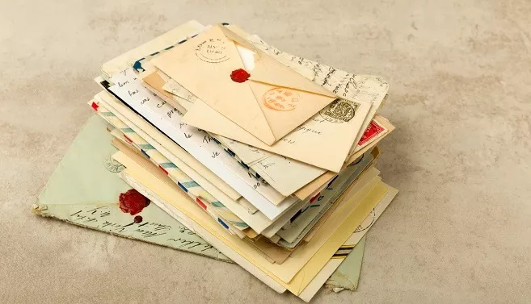

This might not be our memory but some of things we did hehe. I really loved writing love letters for you and i am gonna make more how crazy experience is it huh that i colour a paper with coffee several times then burn the ended with candle holding my love for you and putting all efforts i can . And then draft my feelings , then second draft then third hahahaha then use ai tools to correct grammer coz my babe deserves best things . Also same for writting poems for you hahahaha that was really fun to write all my feelings for you and pull the fuck out my hairs over rhyming it HAHAHAHAHAHAHAHA